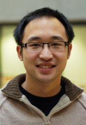

Principal Investigator

Principal Investigator
Felix Y. Zhou
Assistant Professor · Department of Cell and Developmental Biology · Center for Computational Systems Biology · Vanderbilt University
Felix directs the BIA Lab at Vanderbilt University (Department of Cell and Developmental Biology; Center for Computational Systems Biology). He completed postdoctoral training in the Danuser Lab at UT Southwestern Medical Center and the Lu Lab at the University of Oxford, where he also earned his DPhil (PhD) under the supervision of Xin Lu and Jens Rittscher. He holds an MEng in Engineering from the University of Cambridge. His research builds quantitative imaging and computational frameworks to decode how biological information is encoded in cell shape, motion, and molecular signals — spanning cell phenomics, light-sheet microscopy, cancer cell biology, and 3D spatial tissue profiling.
Quantitative cell phenomics
Advanced light-sheet microscopy
Cell signaling & cancer biology
3D spatial tissue profiling
Computational image analysis